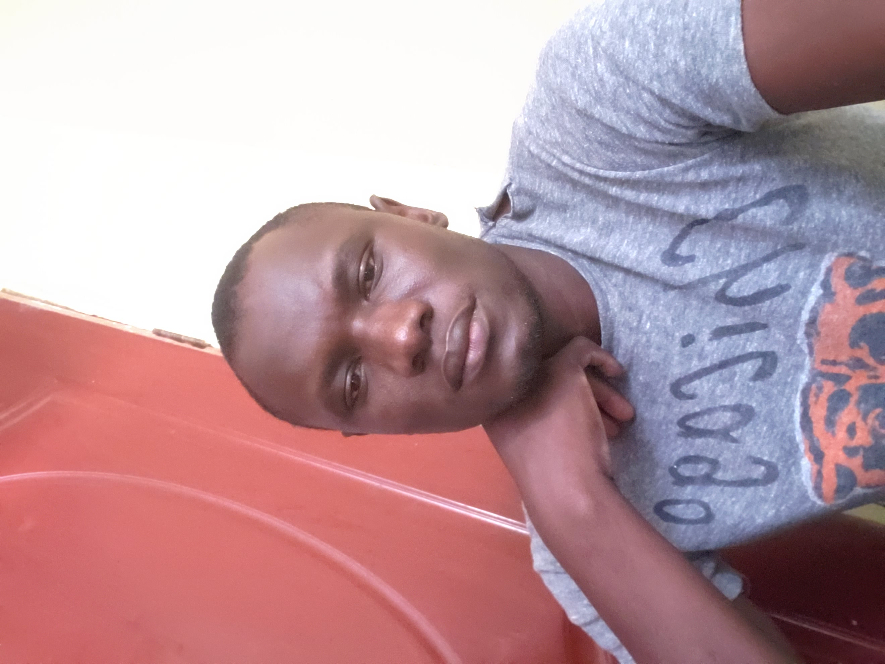

About Me

My name is Kevin Ogutu. I am a Kenyan who lives in a beautiful city called Mombasa. I am currently studying Software Development at BYU-Idaho as an online student. At my free time, I like going to the beach accompanied with my beautiful dog.
Kevin, Kenya
Mombasa is the second largest city in Kenya after Nairobi. In terms of population, it is one of the densely populated cities in Keenya. Mombasa started as an Arab trading center, way back in 1750, where different tribes would meet to trade. Later, it has developed rapidly and more investors have occupied the place, making it a major economic spot for the entire country. Currently, Mombasa has one of the largest ports in the World.